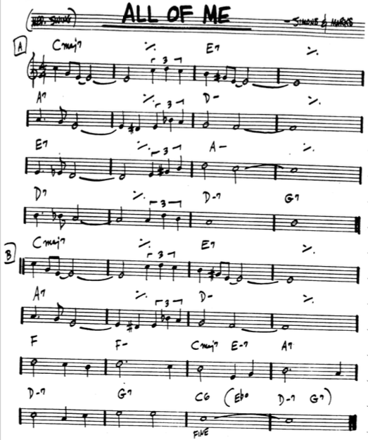
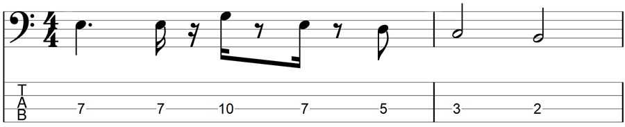
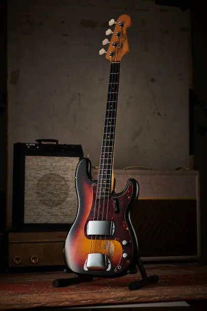

JLF CLASES DE BAJO ELÉCTRICO
INICIO
TEORÍA
EJERCICIOS
LICKS
COVERS
Biblioteca para el Bajista
Recursos, ejercicios y material exclusivo para tu desarrollo musical
Teoría
Progresiones armónicas
Análisis de standards
Improvisación
Teoría musical
Explorar
Ejercicios
Escalas y arpegios
Slap y técnicas avanzadas
Independencia de dedos
Velocidad y precisión
Explorar

Licks
Licks de jazz y blues
Frases de funk y soul
Patrones de rock y metal
Creación de licks
Explorar

Covers
Análisis de canciones
Transcripciones
Adaptaciones
Interpretación
Explorar
